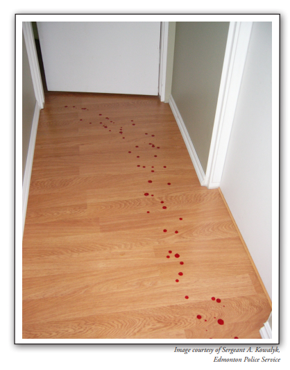

On April 30th, 1984, police rushed to a local farm after getting a frenzied 911 call from Graham Backhouse. When they arrived he could barely stand, as he had several deep cuts on his face and left shoulder. Lying dead on the ground in front of Backhouse’s back door was his neighbor, Colyn Bedale-Taylor. Colyn had died from two gunshots wounds to his chest and he had a large knife in his hand.
Graham said that Colyn had tried to murder him with the knife and that after he had fought him off he frantically ran down the hall to get his gun while bleeding from the initial attack. Colyn pursued Graham down the hall with his knife even after Graham told him he was getting his gun. Because Colyn kept coming after him with the knife, Graham told police he had no choice but to shoot him twice in self-defense. After he had shot and killed Colyn Graham he called police. Officers found blood spatter evidence on the floor of Graham’s hallway.

Below is a 22 minute video documenting the Graham Backhouse Crime: